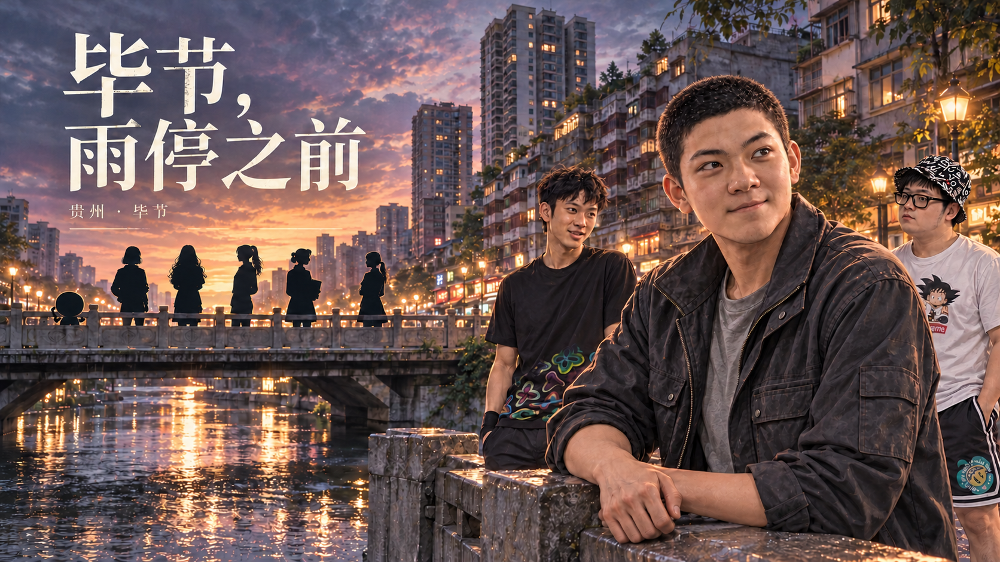
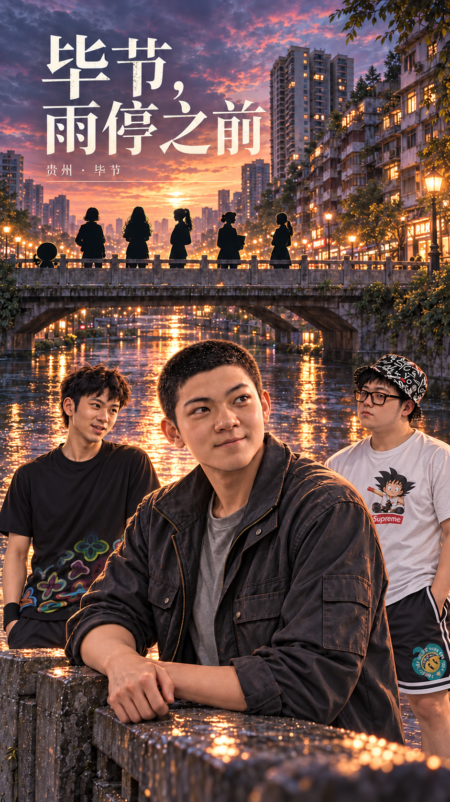

横版封面修订

1672 × 941 · 无损 WebP · 待 A06 采用
工具与相机轮廓已去除；标题“毕节，雨停之前”及副题“贵州 · 毕节”、三名前景人物、其余剪影及河桥暮色保留。生成编辑带来细微纹理变化，不宣称修改区外像素完全相同。
- 保持既有封面与标题布局，仅修订胸袋工具与桥上相机剪影；不新增UI图。
竖版封面修订

941 × 1672 · 无损 WebP · 待 A06 采用
工具、镜头及挂带已去除；原有竖版标题、人物与河桥构图保留。生成编辑带来细微纹理变化。
- 独立竖构图，与横图同样去工具及相机，不由横版裁切。
这一次讲明白
1672 × 941 · 无损 WebP · 待 A06 采用
低马尾、浅酒窝、黑边白衬衫与红绳吻合；两瓶水与饼袋在场，无牵手。手和道具接近下缘，需完整显示。
- 仅飘路线、选择前的共同谈话。选择后退出CG，交往／朋友分别使用差分和文本；朋友版不得牵手。
- A01候选锚点列表偏重选择后段，本图实际建议是选择前河边共同段，以E06节点原文为准。
吃完还要上班

1672 × 941 · 无损 WebP · 待 A06 采用
周栀深青衬衫、毛狼黑色花纹T恤，暮色小店、碗筷、外套吻合；无职业道具和仪式。双人近景不得解释为二人约会。
- 第30天18:00共通饭局局部镜头；其他在场角色位于画外，先用背景＋立绘交代全员。
- 只用于菜端上来后的谈话，不替代周栀离席、回声关门或文文网吧到岗。
她自己决定换个模样

1672 × 941 · 无损 WebP · 待 A06 采用
v2下缘仅米灰外套，未补下装；眼贴位于画面右侧、颈饰、发型、玩偶棒与基准吻合。空凳表达留出的距离，无握手、拥抱或施法特效。CG为较暖的近景切镜，不应宣称与远景逐像素同光照。
- 仅已相识且当前路线huangqiuqiu；必须已执行human_reveal的onEnter并且qiuForm=human。
- 只表现变身后扶正玩偶棒，不得在轻搭手、松手、退凳或球形变化时提前显示。恋爱选择不参与触发。
- 不用于第42天、不放公开封面／未解锁回顾，婚宴不得出现。
领子没有歪
1672 × 941 · 无损 WebP · 待 A06 采用
v2两人站在门框内，毛狼整理领口；飘看向领口、轻扶衣袖，小桌册子在右下。角色脸型与衣装吻合，普通小店规模。首版坐姿拒收。
- 仅E03公共婚宴分支：排除route=piao且piaoRelationship=dating；绝不放到文文与飘交往的朋友饭局。
- E03 ch10场景已指定普通小店婚宴，沿A04空间制作。毛狼便西装、飘简洁礼裙沿A02用户确认。
- 第二版册子身份由原文交代，封面不生成文字；球球及未确认宾客不入镜。